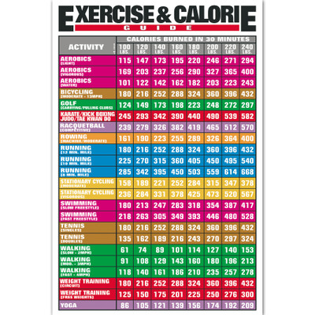
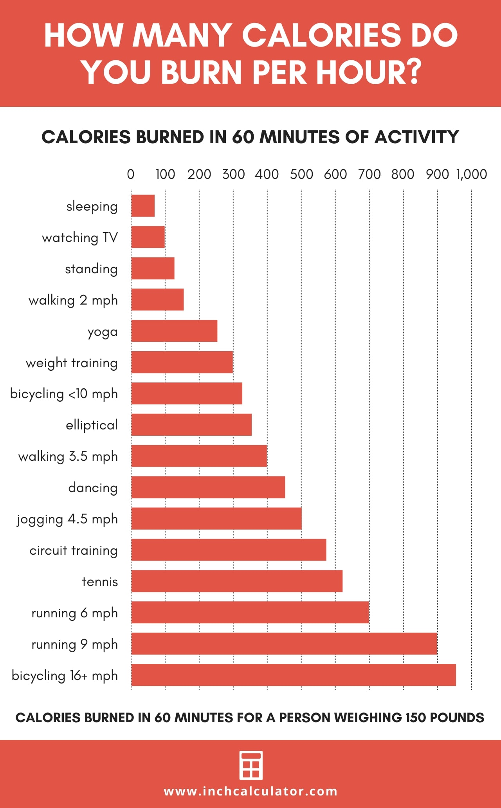

Understanding how many calories you burn throughout various exercises is critical for successful weight loss and fitness goals. An exercise calorie chart allows you to make informed decisions regarding your workout routines by displaying the approximate number of calories burned for different exercises. This knowledge enables you to organize your workouts more effectively, guaranteeing a balance of calories burned and calories consumed. The table below displays a variety of activities you may do based on the number of calories burned every 30 minutes based on your weight, so choose the activity that interests you the most and work hard to burn calories to meet your fitness objectives.
By using an exercise calorie chart, you may adjust your fitness routine to your unique goals, such as weight loss, muscle building, or overall fitness improvement. Consistent tracking and tweaking of your training program based on this data can result in improved results and a more systematic approach to your fitness journey. This chart indicates that you burn calories for everything you do, including sleeping and watching television. So don't think that burning calories is a difficult task.
